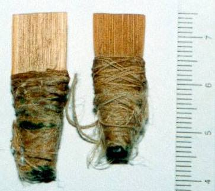
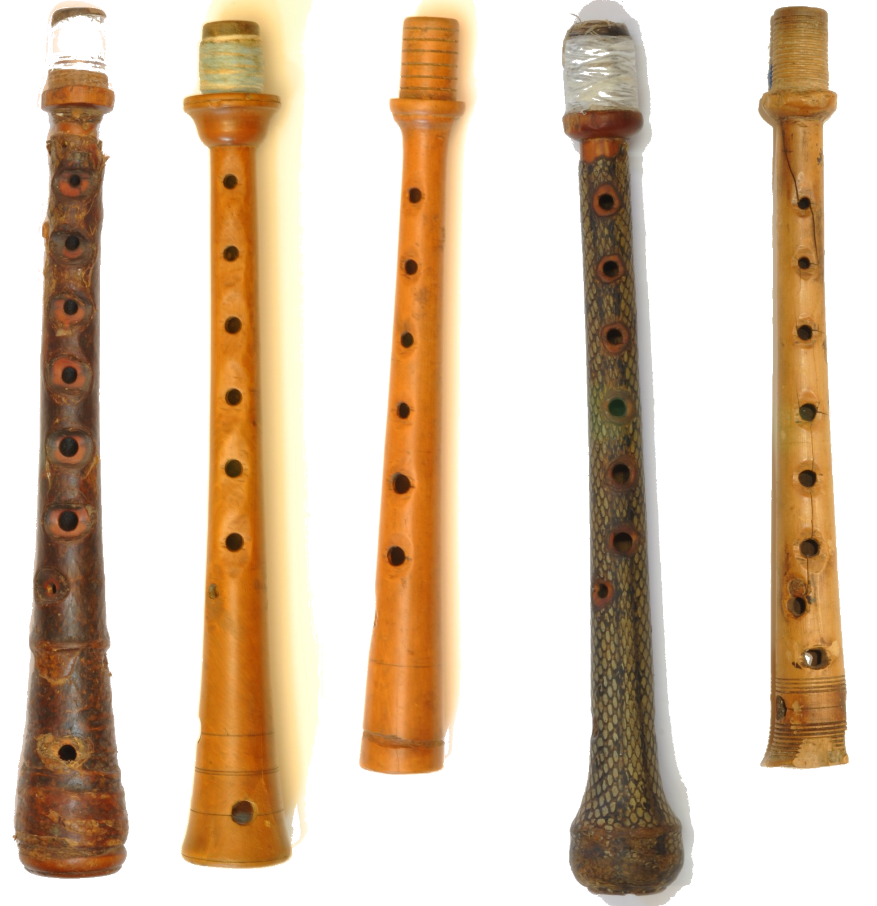
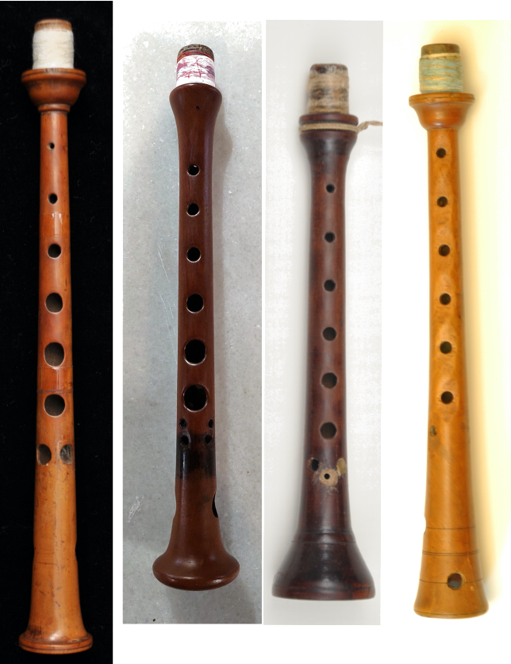
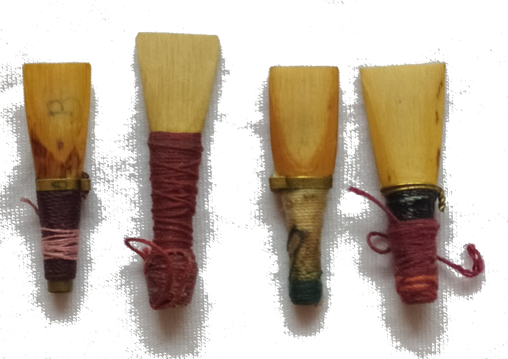
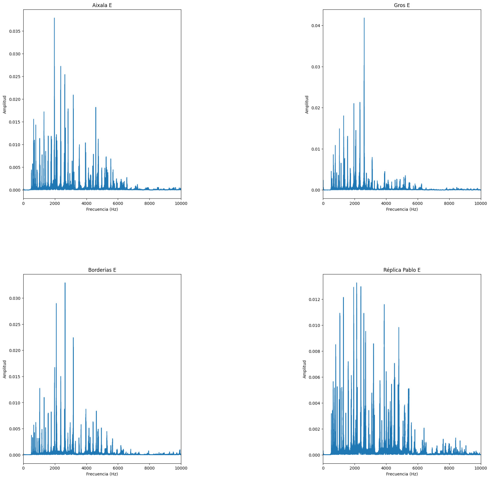
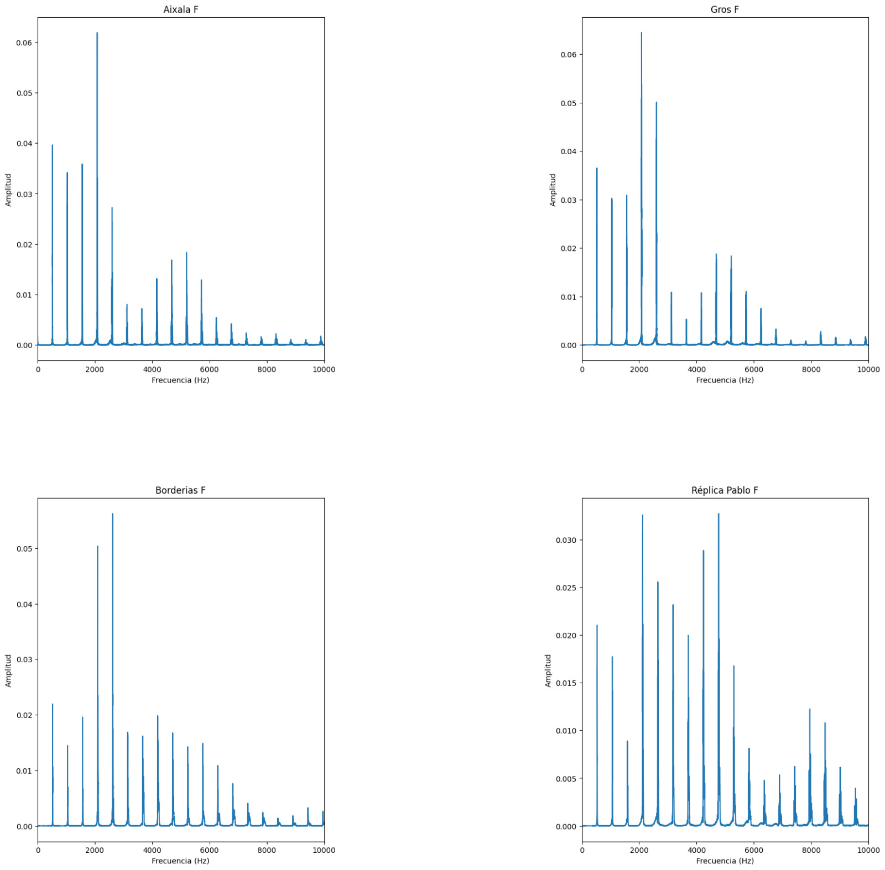
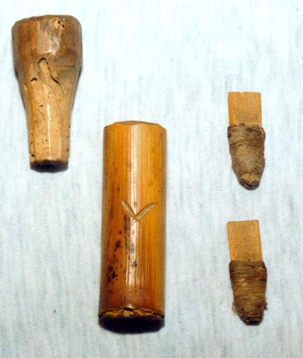

¿Podemos acercarnos a la voz original de nuestras gaitas de boto?
Sobre timbres y cañas
luis miguel morillas
Quiero hablar de
- Sonoridad, timbre
- Cañas
- Desde experiencia personal
Y no de
- Escalas, clarines
- Construcción del instrumento
¿Qué quiere decir? ¿A qué suena mi gaita de boto?
¿Hay distintos sonidos?
Habla y timbre
- Distinguimos quién habla por su acento y su timbre
- Oímos a un gallego, un zamorano, un catalán, un aragonés
- Suenan diferente
- Mi voz y la de otra persona no son iguales
- Matices, un timbre distinto
¿Y los instrumentos?
¿Pasa lo mismo con los instrumentos?
- Tienen su timbre, afinación,forma de tocar
- Pero nuestro mundo uniformiza
- En el pasado no fue así
- No hubo una gaita gallega. Muchas gaitas.
- Seguramente tampoco una única gaita de boto
La Gaita de Boto

Foto: Pablo Carpintero
Lo importante, lo que no se ve
- Pajuela (caña, incha, pita)
- Interior del cono / clarín
- El sonido lo produce una caña doble
- Que estimula una columna de aire
Situación residual del instrumento
- En la segunda mitad del s. XX han desaparecido los gaiteros en Aragón
- Apenas quedan restos de instrumentoss
- No quedan pajuelas/inchas/pitas
- Vagos recuerdos de cómo hacerlas.
Pero muy buenos instrumentos
- Los instrumentos son de gran calidad
- Una gaita tocada durante siglos es un buen instrumento
- Ha cumplido perfectamente su función (muchas generaciones)
- Gran consideración social como instrumento
Si los instrumentos no se modificaron
- Guardan sus características originales:
- su voz y su escala perfectamente afinada
La primera recuperación
- Con los medios que había
- Los músicos quieren instrumentos que afinen bien
- Se mira a las gaitas gallegas
Se hacen funcionar con cañas/payetas gallegas
Qué habia pasado en Galicia
- Gran interés por mejorar las gaitas (dúos, con otros insturmentos)
- Basilio Carril desarrolla en los 60 varios modelos temperados
- Olimpio Carril diseña un tipo de payeta para esos punteiros
- Uno de los modelos triunfa y es el que sigue el resto de luthieres
Estandarización de un tipo de gaita y de palleta
- Gana afinación respecto a otros instrumentos
- Pierde riqueza tímbrica y expresiva
¿Uniformidad o diferencia?
Intento de recuperar el sonido
- Replicar las piezas de madera no es difícil
- Lo complejo: las cañas

Foto: Pablo Carpintero
¿Cómo tiene que ser la caña?
- Equilibrar
tónica - octava - quinta - El resto de los grados no tienen por qué ser temperados
- Observar el instrumento
- Cañas he hemos encontrado
Cañas encontradas
Estas no funcionaron
Simeón Serrate

¡Ninguna puede ser!
Clarines estudiados
Comparación
Hay que intentarlo con:
- Tiras planas
- Sin la parte dura
- Triangulares
- Con tudel largo
Resultado
Harmónicos escala
Harmónicos fundamental
Hay que escucharlo
En el caso de Robres no funcionó
Pero con este modelo
Un sonido diferente

¿Una gaita de boto?
Más allá de la caña
- La gaita aragonesa tiene 3 sonidos
- Bordón, bordoneta y clarín
- Hay que equilibrarlos
Seguir mejorando
- Más allá de la uniformidad
- Compartir el trabajo
- Avanzar sobre las cañas / clarines de robres y bestué
- Sin perder su timbre
- ¿Instrumento temperado?
- Instrumento y repertorio
- ¿Bordones y bordonetas?
Anexos
Proceso de reproducción y datación de las gaitas de boto de Robres y Bestué